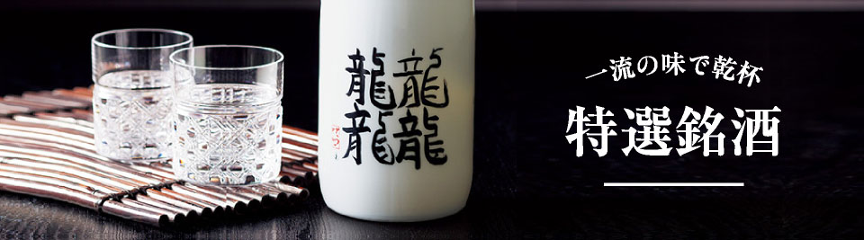
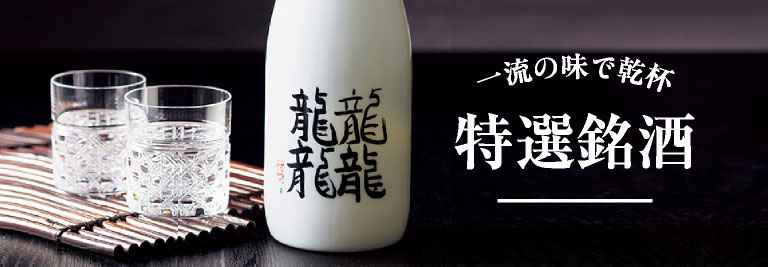
クラフトビール
選び抜いた素材と作り手のこだわりが、クラフトビールの特別な味わいを生み出します。
-
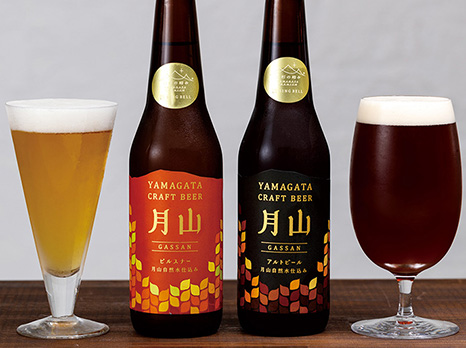
名峰・月山の湧水のみを使用
月山クラフトビール
3,300円（税込）～
ドイツやチェコ産の麦芽とホップ、そして名峰・月山の湧水のみを使用。非熱処理のため無濾過の酵母が生きるビールです。
＼送料無料＆ポイント20%還元／
ご注文はこちら
寿虎屋酒造
創業は江戸時代の享保年間。豊かな自然に恵まれた紅花の里、高瀬で誕生した「寿虎屋酒造」は、酒造りひと筋に３００年の歴史を持つ老舗酒蔵です。伝統を守りつつ、近代酒造技術も駆使。その評価は国内にとどまらず、海外のコンペティションでも数々の賞を受賞しています。
-
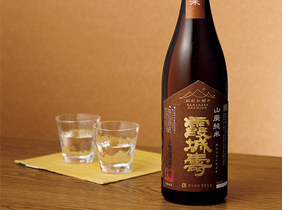
美しい琥珀色と香りが個性的
山廃純米 霞城壽 720ml
2,200円（税込）
酒造好適米「出羽燦々」を使い、昔ながらの山廃仕込みで醸し出した純米酒。やや琥珀色で、紹興酒に近い個性的な香りが特徴。
＼送料無料＆ポイント20%還元／
ご注文はこちら -
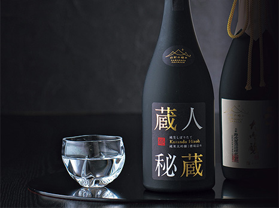
「無濾過の槽前の原酒」を瓶詰
純米大吟醸生酒 蔵人秘蔵 720ml
5,500円（税込）
冬期の寒しぼりの期間に限定して生産する、「無濾過の槽前の原酒」を直接瓶詰した「蔵人秘蔵」の一本。
＼送料無料＆ポイント20%還元／
ご注文はこちら -
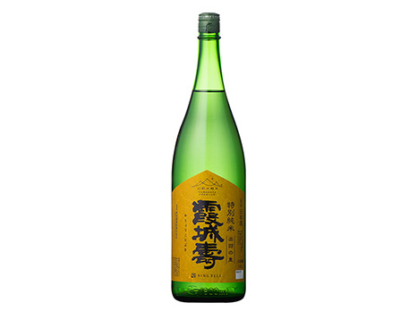
華やかな香りと米本来の味わい
特別純米 出羽の里 1.8L
3,850円（税込）
全国でも珍しい全麹使用速醸酒母醸造。山形県産「出羽の里」精米歩合60%を醸し出した、飲み飽きないスッキリした味です。
＼送料無料＆ポイント20%還元／
ご注文はこちら
東の麓酒造
古くから銘醸地として知られてきた置賜盆地。江戸時代、この地の米沢藩宮内地域で領主より特権を得ていた在郷商人、酒田屋利右衛門から酒造部門を受け継いで誕生したのが「東の麓酒造」です。厳選した酒米を真白く磨き上げ、心を込めて醸し出される清酒の数々には、蔵人の技と想いが込められています。
-
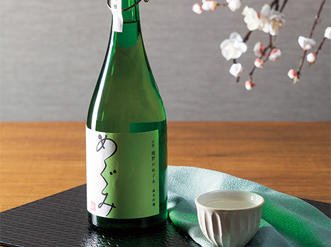
甘酸っぱくフルーティな原酒
熊野のめぐみ（原酒生詰） 720ml
5,500円（税込）
「美山錦」を55％まで精米し、小さな仕込み量でじっくり低温発酵。度数17％の原酒の瓶詰は、ロックや日本酒カクテルにも。
＼送料無料＆ポイント20%還元／
ご注文はこちら -
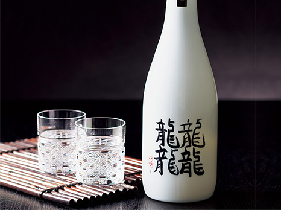
幻の酒米を使った希少な逸品
純米大吟醸雫酒 龍龍龍龍（てつ） 720ml
5,500円（税込）
幻の酒米と呼ばれる「愛山」を使用。独特のやわらかさとふくらみが活かされた上品な味わいと、スッキリした酸味が特徴。
＼送料無料＆ポイント20%還元／
ご注文はこちら -
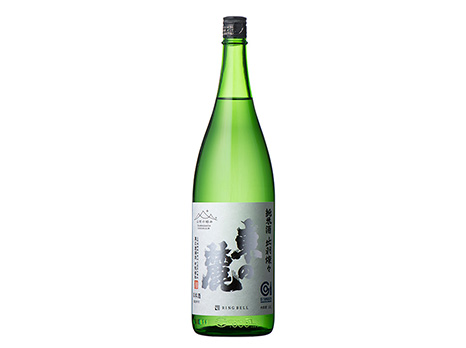
飽きの来ない味わいは晩酌に
純米 出羽燦々 1.8L
3,850円（税込）
酒造好適米「出羽燦々」を使用。スッキリとした飲み飽きしない辛口純米酒は、普段飲みの晩酌酒としておすすめ。
＼送料無料＆ポイント20%還元／
ご注文はこちら
月の井酒造
慶応元年、「松前屋」の称号で酒造りを始めて150年近く。那珂川が流れ込む茨城県大洗町磯浜で、昔ながらの手づくりの酒にこだわる「月の井酒造店」。日本三大杜氏を代表する南部杜氏の菊池正悦さんと蔵人たちの熟練の技と感覚が、変わらぬ時代を超えて愛される銘酒を生み出しています。
-
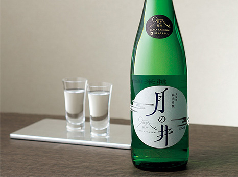
古くより地元で愛されてきた定番
純米吟醸酒 月の井 720ml
2,750円（税込）
古くより地元で愛され続けた定番酒。「山田錦」を大吟醸ぎりぎりの50%まで磨き、昔ながらの手造りで醸し出されます。
＼送料無料＆ポイント20%還元／
ご注文はこちら -
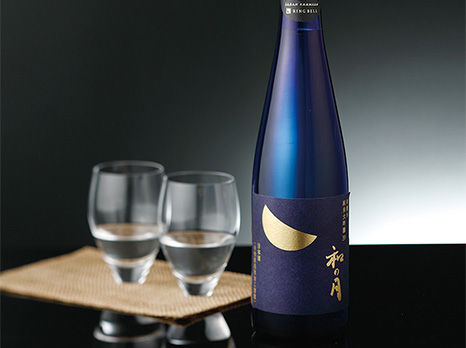
オーガニックに徹底してこだわり
有機米純米大吟醸 和の月39 500ml
5,500円（税込）
歴史ある「月の井酒造」で昨今、評判を集める逸品。洗米から瓶詰めに至るまで、全工程において有機製造に徹して造られます。
＼送料無料＆ポイント20%還元／
ご注文はこちら -
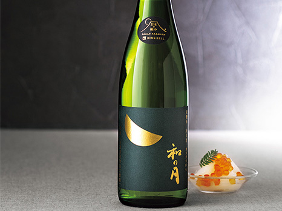
有機米のコクと旨味が広がる
有機栽培米 純米酒 和の月80 720ml
3,300円（税込）
オーガニックにこだわった「和の月」の想いをそのままに、より玄米に近い精米歩合80%に。甘みを伴ったコクのある飲み口。
＼送料無料＆ポイント20%還元／
ご注文はこちら